Basics of State Space Models (SSM)
Prerequisite: To fully grasp the concepts in this note, it is highly recommended to have a basic understanding of Recurrent Neural Networks (RNN), Differential Equations, and Parallel Scan algorithms.
- SSM describes the representation of a latent state and predicts the next state based on the input received.
- It maps components using a system of linear differential equations:
\[ h'(t) = A h(t) + B x(t) \] \[ y(t) = C h(t) + D x(t) \]
- This system is Linear Time-Invariant (LTI).
- The matrices \(A\), \(B\), \(C\), and \(D\) are fixed parameters that do not change over time.
Discretization
- In practice, we mainly process discrete signals (such as images or language), so the continuous SSM must be discretized.
- To make it easier to understand, we can illustrate the discretization process by solving the differential equation \(h'(t) = Ah(t) + Bx(t)\) using Euler's Method.
Based on the approximation definition of a derivative: \(\lim_{\Delta \to 0} \frac{h(t + \Delta) - h(t)}{\Delta} = h'(t)\). For a sufficiently small time step \(\Delta\), we have:
Since \( h'(t) = A h(t) + B x(t) \), substituting this in gives:
Thus, we obtain the function \( h(t + 1) = \bar{A} h(t) + \bar{B} x(t) \) where \(\bar{A} = I + \Delta A\) and \(\bar{B} = \Delta B\).
Zero-Order Hold (ZOH)
The standard method currently used for SSMs is Zero-Order Hold (ZOH):
The discrete equations corresponding to the time step \(\Delta\) become:
Note: In practice, the step size \(\Delta\) is not chosen arbitrarily but is treated as a learnable parameter during model training.
Intuition & Meaning of SSM Parameters
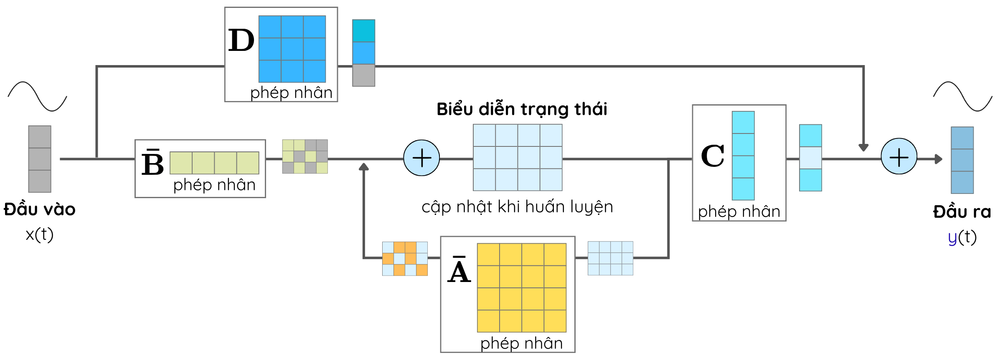
- Matrix \(\bar{A}\): The transformation process, which decides whether to forget or remember the past.
- Matrix \(\bar{B}\): Projects the core information from the current input.
- Matrix \(C\): Transforms the hidden state into the predicted output \(y_t\).
- Matrix \(D\): Usually omitted to simplify computation (ignoring the skip connection in the formula): \(y_{t} = C h_{t}\).
Parallel Computation of SSM
Recurrent Computation
- \(h_t\) depends directly on \(h_{t-1}\).
- Characteristics: The inference process is very fast and efficient, but training cannot be parallelized.
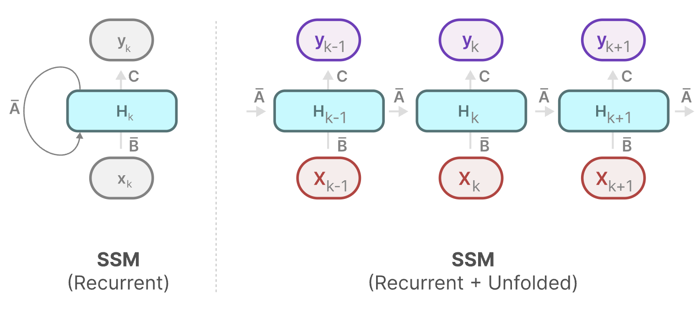
Source: Maarten Grootendorst
Convolutional Computation
Because of the LTI properties, SSMs can be computed using convolutions. If we assume the initial state \(h_0 = 0\), we can manually walk through the first 3 steps to uncover an interesting pattern:
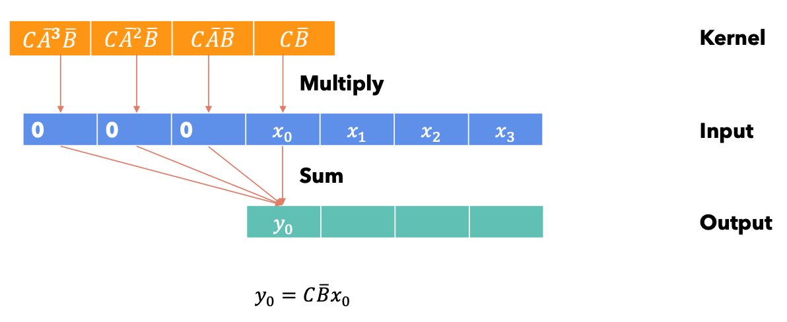
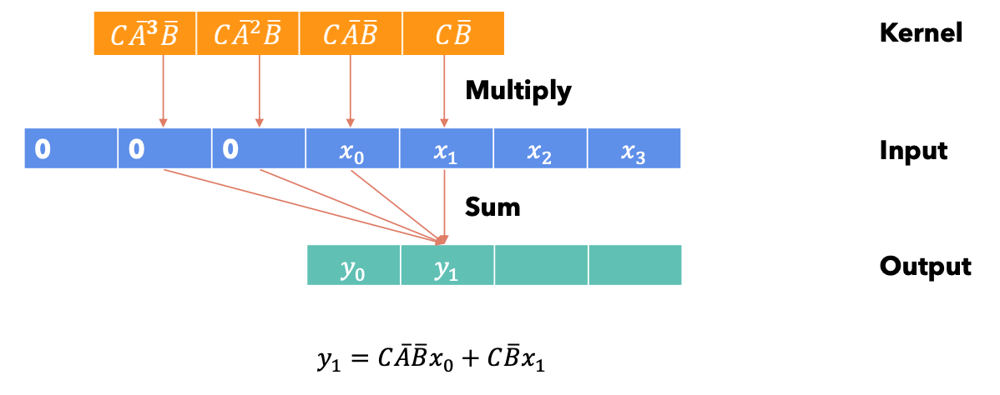
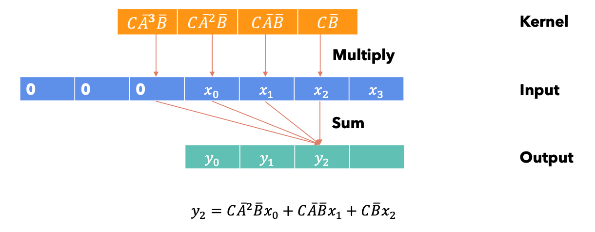
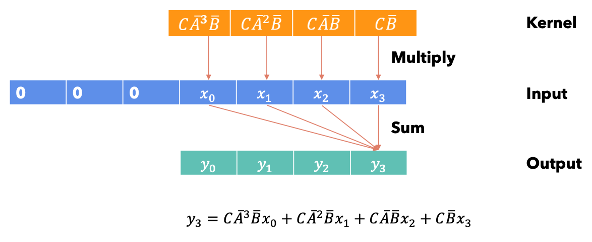
As shown, the SSM can be calculated as a convolution with the kernel \(\bar{K}\):
Characteristics: This formulation allows for full parallelization during training by effectively leveraging the GPU.
Importance of Matrix A & HIPPO
Problem: Choosing a random static matrix \(A\) fails to capture complex relationships over very long sequences.
Solution: The HIPPO Matrix (High-order Polynomial Projection Operators). It is similar to the concept of Fourier frequency analysis, but superior due to the use of Legendre Polynomials.
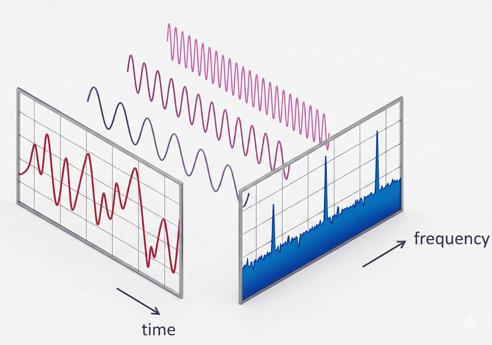
Fourier Transform
Mechanism: It perfectly reconstructs the most recent signal instead of the entire sequence. Older signals are heavily decayed \(\rightarrow\) prioritizing the memorization of recently appeared tokens.
S4 Architecture
S4 = SSM + Long-range Dependencies (HIPPO) + Discretization.
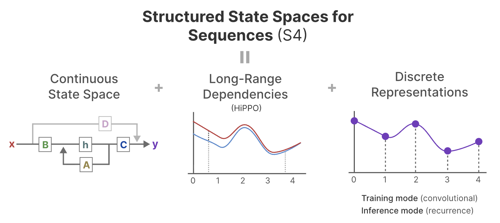
Source: Maarten Grootendorst - S4
Motivation for Mamba: Overcoming LTI Limits of S4
Advantage of Static Parameters (LTI): They perform exceptionally well on copying tasks (Time Shift).
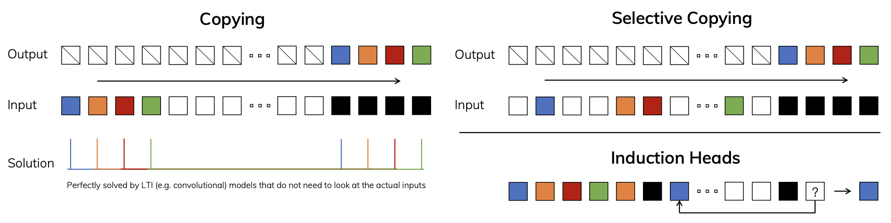
Left: Tasks that SSM/S4 handles well. Right: Tasks that SSM/S4 struggles with.
Limitations of LTI: The internal state cannot alter itself based on the input context, resulting in a lack of context-aware reasoning capabilities.
Failures on Complex Tasks:
- Selective Copying: The model needs to remember key content while actively filtering out noise (Content-aware).
- Induction Heads: The model needs to predict the future based on the contextual rules of the past (Context-aware).
Selective SSM (S6)
- Core Idea: the parameters are forced to be dynamic, varying based on the input \(x_t\)
(Input-dependent):
\[ \boldsymbol{B}_t = \text{Linear}_B(x_t) \] \[ \boldsymbol{C}_t = \text{Linear}_C(x_t) \] \[ \boldsymbol{\Delta}_t = \text{Softplus}(\text{Parameter} + \text{Linear}_\Delta(x_t)) \]
- Effect: Mamba gains the proactive ability to ingest, retrieve, or erase memory at each step \(t\) depending on the observed data.
- Note: The matrix \(\boldsymbol{A}\) remains fixed (as a static parameter) to rely on the stable HIPPO anchor for long-sequence memory and to avoid mathematical redundancy.
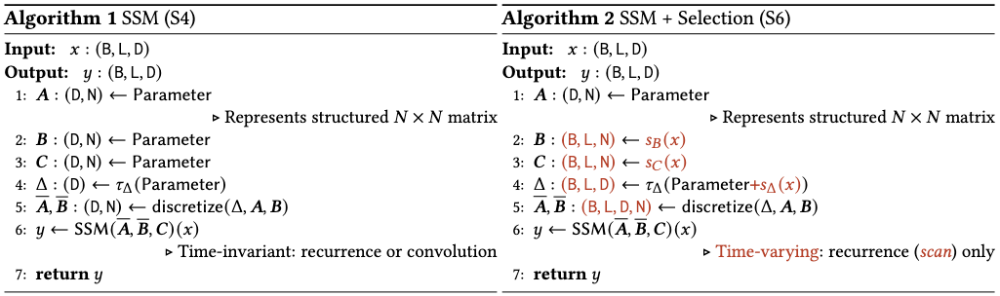
Comparison between S4 and S6 (Mamba)
Hardware-aware Selective Scan
Challenge: The dynamic variability breaks the LTI property \(\rightarrow\) We can no longer use Convolutions \(\rightarrow\) We must compute sequentially. This makes it difficult to use GPUs for parallelization the way Transformers do.
Hardware-aware Selective Scan Algorithm
- Parallel Scan: Leverages the associative property of the sequential system to chunk and cluster computations across multiple threads on the GPU.
- System Memory Optimization (SRAM): Executes the mathematical operations directly inside the fast SRAM, avoiding the heavy latency from the memory I/O bottleneck (HBM) on the GPU.
Parallel Scan Illustration
Illustrating the idea through the Prefix Sum example:
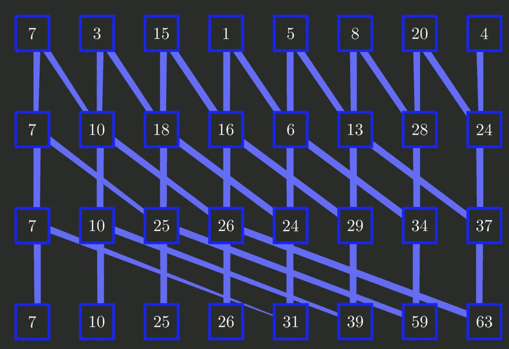
Instead using Sum Operator or Addition, Mamba uses Composition Operator (still associative). This is an illustration during Training:
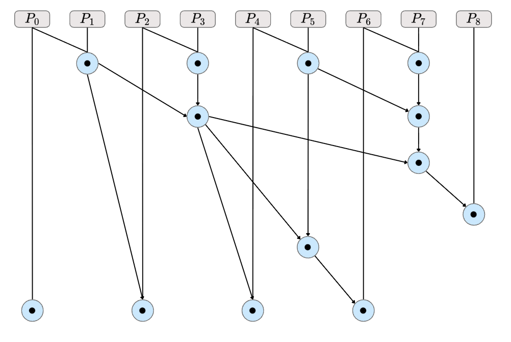
Illustration during Inference:
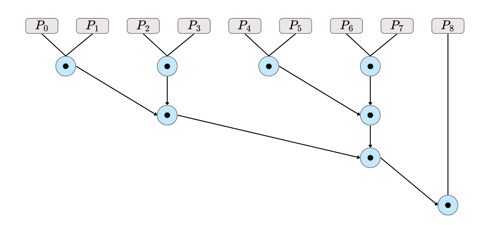
Mathematical Verification: Sequential vs. Parallel Scan
To cement how the parallel scan yields the exact same state as the recurrent loop, let's manually verify it for the first few steps.
First, we define our recurrence relation. Let \( u_t = B_t x_t \), and assume the initial state is evaluated as \( h_0 = u_0 \):
1. Sequential Computation:
If we process this standardly one step at a time, we accumulate the state sequentially:
2. Parallel Scan Computation:
Now, instead of iterating one-by-one, we define a tuple \( P_i = (A_i, u_i) \) and an associative
composition operator \(\circ\) :
By chunking our operations, we can compute sub-sequences in parallel. For instance, computing two chunks independently:
Next, we compose these two intermediate results together:
Takeaway: Notice how the second element of the resulting tuple \( P_{0\rightarrow 3} \) is exactly equal to \( h_3 \). This proves that by mapping our recurrence to an associative operator, we can compute the highly sequential hidden states in parallel chunks without any accuracy loss!
Mamba Block
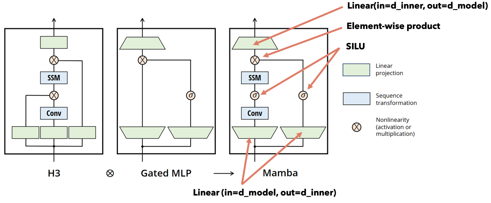
- These blocks are stacked in multiple layers, similar to a Transformer architecture.
- Causal Convolution: A small Conv1d layer is included to provide local contextual information, effectively establishing causality and preventing the model from looking ahead into the future.
References
- Mamba and S4 Explained: Architecture, Parallel Scan, Kernel Fusion, Recurrent, Convolution, Math (Umar Jamil, 2024).
- A Visual Guide to Mamba and State Space Models (Maarten Grootendorst, 2023).
- Bilinear transform (Wikipedia contributors, 2026).
- Zero-order hold (Wikipedia contributors, 2026).
- Fourier transform (Wikipedia contributors, 2026).
- Efficiently Modeling Long Sequences with Structured State Spaces (Albert Gu, Karan Goel, Christopher Ré, ICLR 2022).
- Parallel Prefix Sum (Scan) with CUDA (Mark Harris, Shubhabrata Sengupta, John D. Owens, GPU Gems 3, 2007).
- Prefix Sums and Their Applications (Guy E. Blelloch, 1993).
- Hungry Hungry Hippos: Towards Language Modeling with State Space Models (Tri Dao et al., 2022).
- Mamba: Linear-Time Sequence Modeling with Selective State Spaces (Albert Gu, Tri Dao, 2023).